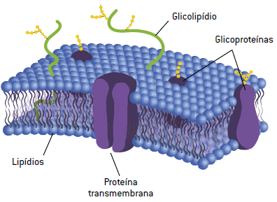

A Membrana Plasmática é uma barreira de proteção que faz o transporte de substâncias, regulando o transporte das substâncias para dentro e fora da célula. Já a parede Celular é encontrada em células vegetais para conferir proteção contra o excesso de patógenos e até mesmo a entrada excessiva de água. Além disso, a parede celular garante a rigidez da célula. Existem dois tipos de parede celular sendo ela a primária e a secundária, a primária está presente em todas as células e a secundária se encontra entre a membrana e a parede primária sua função é garantir a resistência dada pela primeira parede celular.
